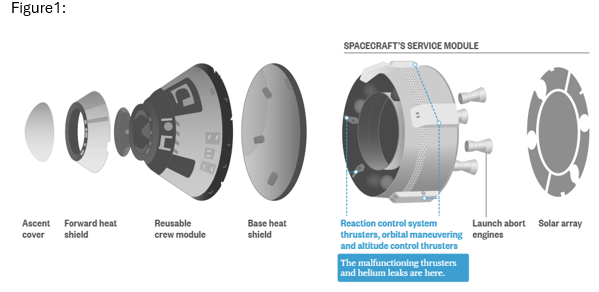

This paper investigates the fallout from the failures of Boeing’s Starliner spacecraft during its first manned
mission to the International Space Station (ISS). The mission, which took place in June, revealed critical
faults that had previously gone undetected during in-flight testing. This analysis examines the technical
issues behind the spacecraft’s failure, particularly the malfunctioning thrusters, and explores how the
rushed development process contributed to these flaws. Additionally, the paper predicts the potential
implications for Boeing’s reputation, the safety of commercial space travel, and the long-term consequences
for Boeing’s involvement in NASA’s Commercial Crew Program (CCP). The findings suggest that, while the Starliner
incident did not result in fatalities, it highlights significant engineering flaws that could jeopardize Boeing’s
future in the space industry if corrective actions are not taken.
Introduction
Space is a domain many would wish to enter, and with the logistics of commercialised travel becoming an ever more
fore-coming reality it is vital companies affiliated with NASAs Commercial Crew Program (CCP)
are creating a safe, reliable infrastructure to eventually make commercial, non-scientific interstellar journeys.
This paper analyses the failures of Boeing, one of the select private companies affiliated
with the governmental organisation NASA’s CCP (CST-100 Starliner (no date)) whose latest capsule series malfunctioned
on its first manned trip to the International Space Centre (ISS), leading to two astronauts
being trapped in space. The causes of these failures, their impact on the mission, and the long-term consequences.
Main Body
Main article:
NASA astronauts Suni Williams and Butch Wilmore were the two crew members of Boeings first commercial spaceship model:
The Starliner. It was sent to the ISS on the fifth of June 2024, where faults that were not
detected during testing were discovered. From launch, some helium was found to be leaking, of which the rate of
increased during flight. In addition, a malfunction in the 5 out of the total 28 thrusters lead
to an hour-long delay in the docking sequence to the station. The cause was unexplainable as well at first, and
even in orbit testing no direct cause could be found for these faults. (Chow, D. and Carman, J. (2024)
it was debated whether it would be safe to return withe capsule however the uncertainty that more errors could form
were too high to safely allow the pair to return. The capsule was ejected autonomously in
September. This was a sensible choice as thruster errors occurred again as well as a navigation blackout (Heracleous, L. 2024).
A grounded test conducted research at the White Sands Test Facility New Mexico on an engine and thruster set, of which
was subjected it to similar conditions of the one in orbit. From their tests 27 out of the 28
thrusters performed poorly as shown in figure 1 below. This concluded that the cause for the malfunction on the
Starliner was caused by a tear in a Teflon seal which swelled pressure and heat, (Chow, D. and Carman, J. (2024)). This would block the flow of expelling propellant gas from inside the thruster,
affecting the magnitude and the direction of the motion of the capsule. Materials used in
thrusters must be able to withstand very high temperatures of over 3500K without their physical form changing much
and still retaining their structural integrity.
Figure1:

Figure1: representation of the Starliner module highlighting the affected area
(Chow, D. and Carman, J. (2024))
Thrusters:
The theory and science of how thrusters work is based on Newtons third law motion, which states that for every action force
applied there is an equal and opposite reaction.
Engineers created thrusters which accelerate mass out of controlled nozzles, propelling spacecraft through a medium by
applying the ‘control force’ of expulsion in the opposite direction of desired travel.
(Colagrossi, A. et.al, 2023) These are not only useful for general propulsion through vacuums and high altitudes but also
especially vital for small trim movements in docking and undocking sequences onto
larger bodies such as the International Space Station.
The Starliner:
The Starliner engineering project was largely over budget and its development process was far behind compared to its estimated
deadlines. These rushed procedures are what allowed small errors to form in various
systems in the capsule. This resulted in the 2 astronauts being forced to remain in space for an additional 6 months where
they will be taken back aboard the Space X Crew Dragon 9 capsule in February 2025.
Meanwhile, on Earth Boeings public image and the integrity of its engineering reputation have only worsened, being the
latest in a long series of disasters such as the emergency door of a 737 max 9 blowing out
earlier in January 2024 and the two fatal crashes of their 737 Max aircrafts. (Heracleous, L. 2024). Altogether this leads
to the credibility of the company to provide safe and reliable spacecraft and aircraft
to be highly doubted and maybe even a possible removal from the CCP altogether.
Conclusion
To Conclude, this incident is the latest in a series of failures on behalf of the Boeing company that show how its rushed
work led to many major flaws. It is worth noting, although the Starliner
did not lead to fatalities, the potential risks that going to space posed, it would have led to the largest fallout and
likely ended their contract with NASA’s CCP. Both the helium leaks and the thruster
faults could have easily led to the capsule not docking onto the Space Station, trapping the two astronauts in the vacuum
of space. Providing Boeing continues the Starliner programme, we can only hope that
the issues clearly revealed on this capsule will be solved and refined before the next model is finalised or the likelihood
that Boeing will be involved in the future of commercialised space travel is extremely
low, leaving just Elon Musk’s Space X on contract.
References
CST-100 Starliner (no date) The Boeing Company Official Website. Available at: https://www.boeing.com/space/starliner#overview.
link text
Chow, D. and Carman, J. (2024) What went wrong with Boeing’s Starliner spaceship that left two astronauts in space, NBCNews.com
link text
Colagrossi, A. (2023) Modern spacecraft guidance, navigation, and Control, pp. 337–377. doi:10.1016/c2020-0-03563-2
link text
Loizos Heracleous (2024) Can Boeing recover from its Starliner spacecraft failure?: News, Warwick Business School. Available at: https://www.wbs.ac.uk/news/boeing-recover-starliner-spacecraft-failure
link text